|
<< Click to Display Table of Contents >> Leonard Assist |
This node is part of the integration between Mistika Workflows and DaVinci Resolve.
The Leonard Assist node runs in the Mistika Workflows side, and it is intended to work together with the Mistika Workflows Launcher script for DaVinci Resolve (documented at the end of this chapter) . This script will collect all the metadata describing the current Resolve Timeline and it will send it as a .json file to this node.
Then this node receives the .json file generated by the Mistika Workflows Launcher, it gets all the media files from the Resolve’s timeline and it generates an EDL file with markers information for each video track.
The EDLs are then sent trough the edl output connector, and all the media files mentioned in the EDL are sent trough the output files connector.
Any workflow that makes use of EDLs and media files as inputs can then be directly linked to a DaVinci Resolve timeline, and it can be launched from Resolve directly by using the Mistika Workflows Launcher. Please refer to the Mistika Workflows Launcher documentation for more details.
For example, with this node we can connect directly a DaVinci Resolve's timeline with a workflow that generates all the required assets for a typical VFX Pull:
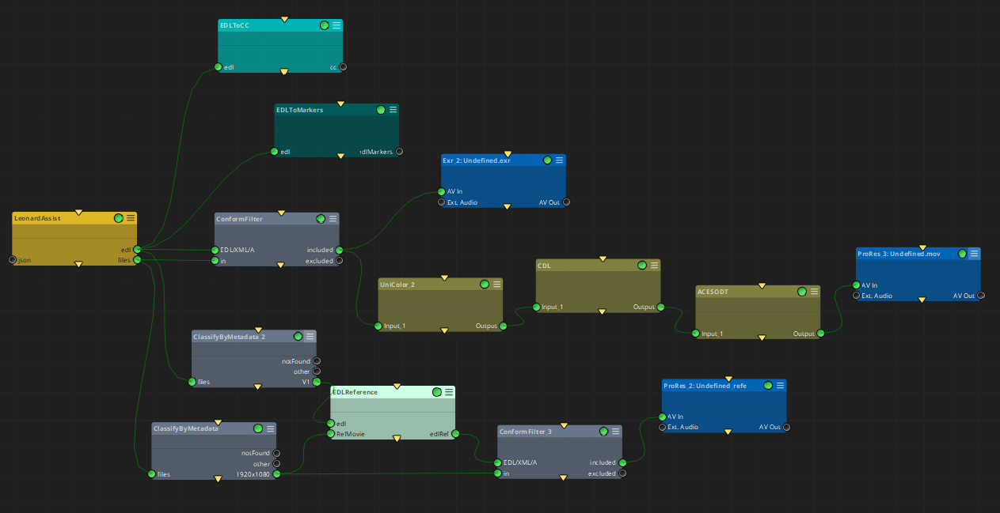
json: The .json file(s) to be processed generated with the Mistika Workflows Launcher in DaVinci Resolve's current timeline.
edl: EDL files generated for each video track processed
files: Media files from DaVinci Resolve's current timeline gathered in the .json file, and filtered by the Video tracks processed in the node.
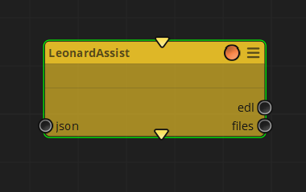
edlOutputPath: The path where the EDL generated files will be saved.
overwrite: Toggle to replace the existing EDL files in the output path.
jsonInputOverride: Toggle that ignores the json input files of the node and gets directly the json file sent with the Mistika Workflows Launcher from Resolve.
TracksToProcess: Video tracks of Resolve’s timeline to be processed.
exportMarkers: Toggle to include markers' information in the EDL files generated.
edlEvents: Pulldown menu to select what is to be included in the generated EDL files: only those clips with markers in their same timeline TC location; or all clips present in the video tracks to be processed.
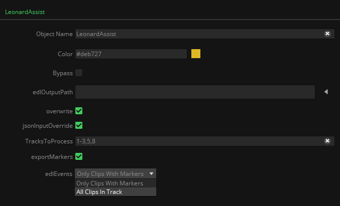
MarkersOptions:
•getMarkersName: toggle to get the text of Resolve’s marker name and insert it as marker metadata in the generated EDL files.
•getMarkersNotes: same as before, but getting the text of Resolve’s marker notes instead of the marker's name.
•MarkersColorX: Pulldown menu to select the desired Resolve’s marker color to be processed.
•MarkersTrackTargetX: Pulldown menu to select the desired Video Track where the MarkersColorX will be attached to.
MarkersSuffixX: If the same marker color is selected to be attached to different video tracks, string literals can be added to the MarkerName or MarkerNote selected before.
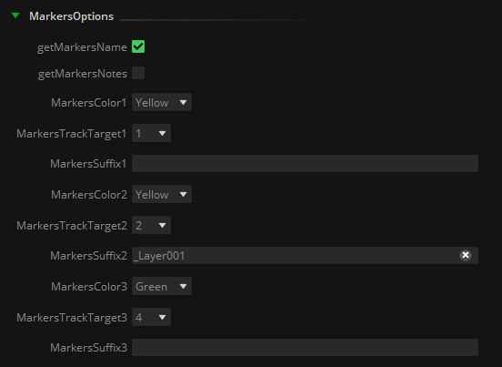
Name Convention edlNC: Name Convention to be applied to the edl files generated.
Name Convention filesNC: Name Convention to be applied to the output files.
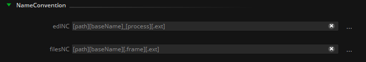
Code: This particular node is written in python language. The script itself has been left accessible as an example for Python programmers, or in case you want to customize it to your particular needs.
How it works:
If we have a timeline in DaVinci Resolve with the necessary elements to generate a VFX Pull like this:
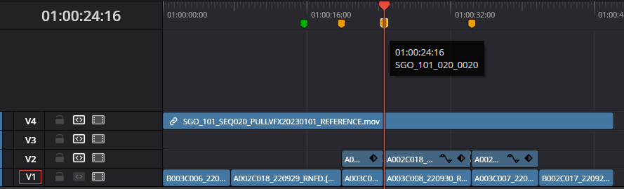
We find the base plates in the video track 1, the background layers in the video track 2, and the reference movie in the video track 4. We also find that the yellow markers have the VFX name, and there is also a green marker. By setting the MarkerOptions as shown before, the Leonard Assist node will generate three EDLs:
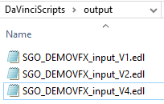
And the content of each EDL will be as follows:
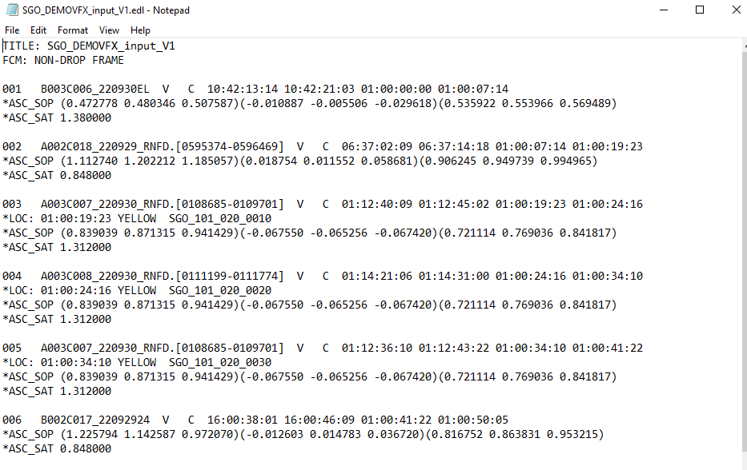
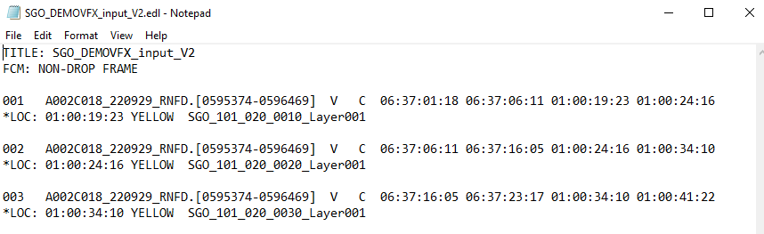
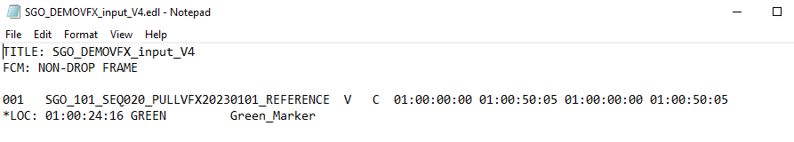
Please note that the Leonard Assist node will generate the markers metadata with Avid/Premiere/Mistika format, not with Resolve’s EDL markers’ format.
If it is needed, the EDL to Markers node can be used afterwards in the workflow to convert from Avid/Premiere/Mistika format to Resolve format.
Finally, all EDLs generated, alongside with the files of the video tracks selected, will be placed in their corresponding output connectors of the Leonard Assist node, so you can continue any workflow based on these elements afterwards.
This application is launched within DaVinci Resolve and is intended to work together with the Leonard Assist node in Mistika Workflows.
It allows to load an already configured .mwf file, review its nodes’ states and output paths, and launch the Workflows jobs contained in the .mwf file with the clips and edit information of the current timeline opened in DaVinci.
Once permanently installed, Mistika Workflows Launcher can be found in Resolve’s Workspace → Scripts → Deliver menu.
If it doesn’t appear please refer to the installation procedure and troubleshooting at the end of this document.
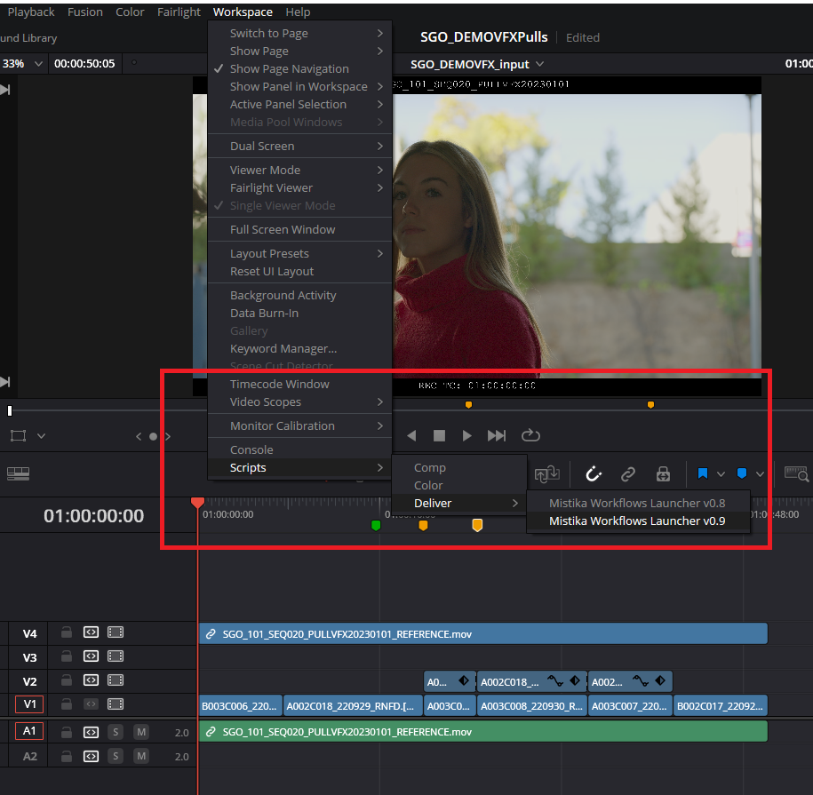
Then a window will appear with several options:
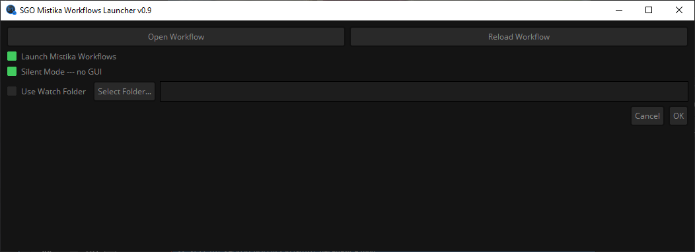
If we have our workflow already tested and working, we can connect it with the Launcher in different ways by activating the corresponding checkboxes:
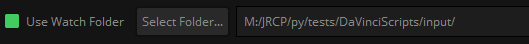
Use Watch Folder: If this option is selected, the Mistika Workflows Launcher will generate a .json file with the required information of the clips and markers involved in the current timeline of DaVinci Resolve. This option is useful in, at least, two different situations:
•If we are in the prototype phase of any workflow, by feeding it with our .json file and check the Leonard Assist node parameters configuration:
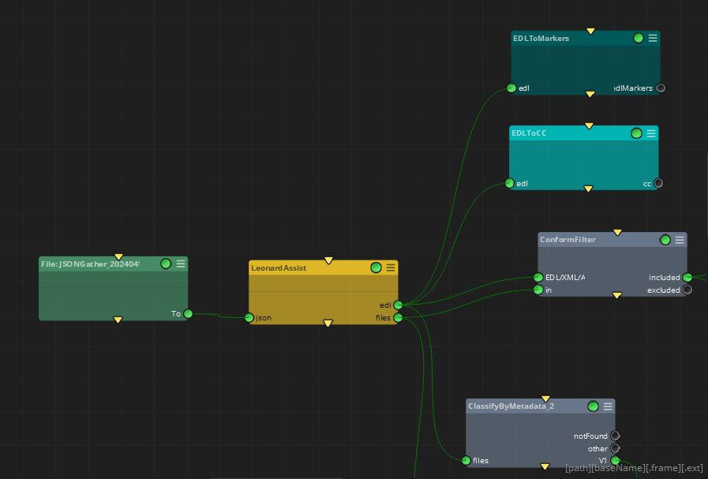
•If the workflow is already designed and tested, and there is a Mistika Workflows instance waiting for input files in a Watch Folder node.
This instance can be local in the same computer where Resolve is running, or can be in another system and monitoring a network shared folder where the DaVinci’s operator just drop the .json files:
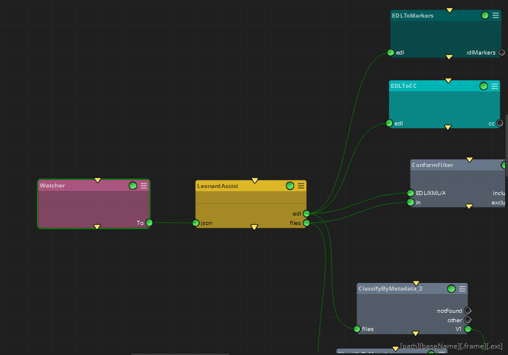
While making use of the Use Watch Folder option, remember to de-activate the jsonInputOverride checkbox in the Leonard Assist node, so it can process its inputs from other nodes.
Once we have our workflows designed and tested, they can also be directly executed from the Mistika Workflows Launcher.
In this case, the jsonInputOverride checkbox in the Leonard Assist node must be activated in order to receive directly the .json timeline data from Resolve.
Also deleting or bypassing any input node is recommended before saving the .mwf file and loading it into the Mistika Workflows Launcher.
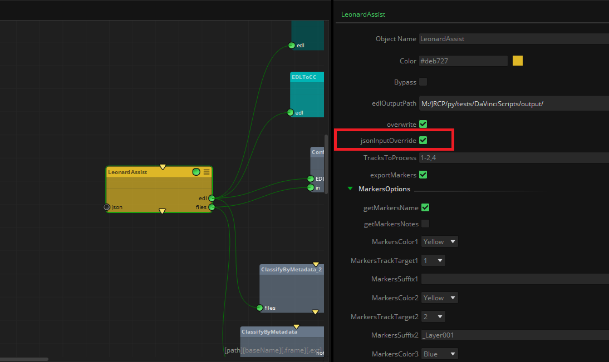
To load our already configured workflow in the Launcher, just click on ‘Open Workflow’ and load the desired .mwf file.
Once loaded, the workflows contained are represented by tabs, and in every tab a list of involved nodes is presented, alongside with its configured status and output path.
This allows us to have a quick overview of the tasks that are going to take place once we launch the workflow:
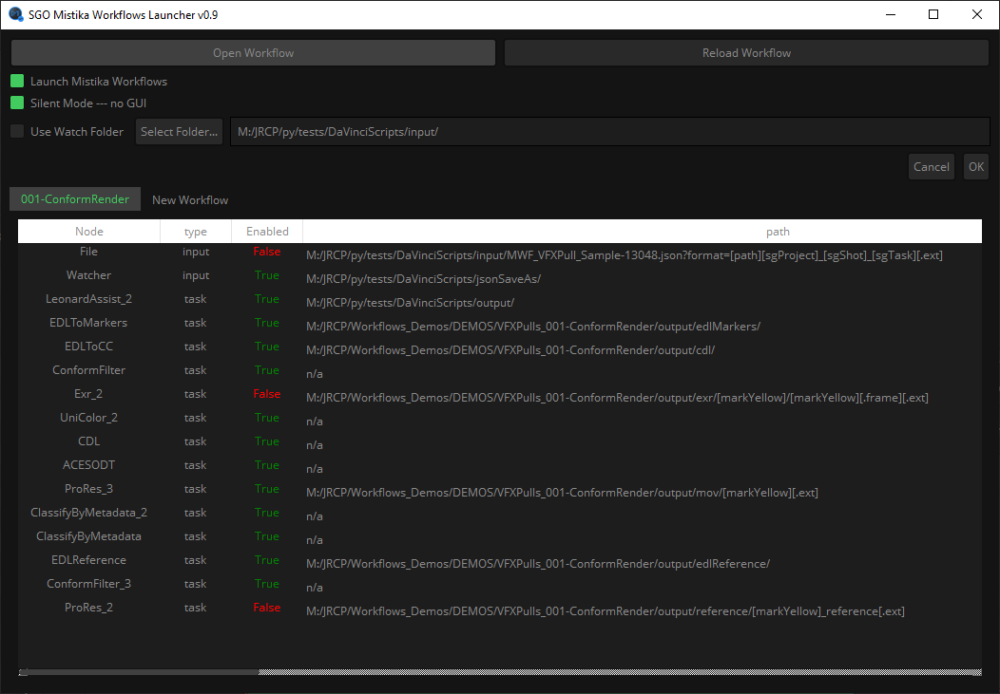
If we decide to change any node property, it’s just a matter of opening the .mwf file in Mistika Workflows, modify it, and save it.
Then by clicking on ‘Reload Workflow’ it will update all properties modified.
In order to launch the loaded workflow, we can select the following options:
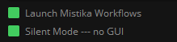
•Launch Mistika Workflows: this option will open a Mistika Workflows instance, load the selected .mwf file, add all workflows to the Render Queue, and execute it. It’s the equivalent of what a human operator would do manually.
•Silent Mode – no GUI: this option allows to run Mistika Workflows and execute all workflows defined in the .mwf file without opening the application.
As there will not be any GUI, no progress bar nor errors will be presented. In this case it is recommended to connect the Mistika Workflows logs with any log management application, in order to monitor all processes and get some feedback.
Please refer to this article for more information about Mistika Workflows and how to connect it with other log management applications.
Mistika Workflows Launcher installation and troubleshooting on DaVinci Resolve's side
The required main script “Mistika Workflows Launcher.py” is provided in a regular installation of Mistika Workflows under the path ~/SGO AppData/LeonardAssist/shared/
In order to run it, it can be simply drag-and-dropped into Resolve's console, but for a permanent installation it must be copied into DaVinci Resolve scripts folder, which in a standard configuration is something like:
C:\ProgramData\Blackmagic Design\DaVinci Resolve\Fusion\Scripts\Deliver\
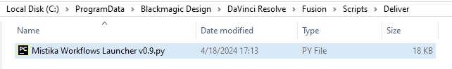
The system where the Launcher is installed will also need access to the ~/SGO AppData/LeonardAssist/shared/ path to make the interchange of the data of the current timeline, as well as other features such as the style and color of the plugin. This path can be found within a regular Mistika Workflows installation on the same system.
If you plan to execute Workflows in another system, make sure that both have access to the same ~/SGO AppData/LeonardAssist/shared/ path under a shared network volume.
The MistikaWorkflowsLauncher.py will also need to have the required python libraries installed.
If some of them are missing it will be prompted in DaVinci's Console:
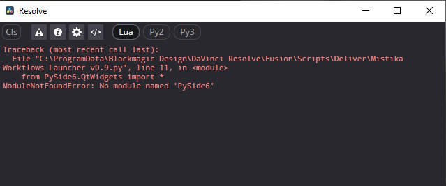
The required libraries that the script needs are:
import os
import sys
import platform
import xml.etree.ElementTree as ET
import json
import tempfile
from datetime import datetime
import subprocess
from PySide6.QtWidgets import *
from PySide6.QtCore import Qt, QStandardPaths, QOperatingSystemVersion
from PySide6.QtGui import QColor, QIcon
Any of them can be solved at system’s level and be installed via pip, or any other preferred method according to your python setup. It is also recommended to keep aligned the python version of your system with Mistika Workflows’ python version, which at the moment of writing this document is 3.11.1.
If the console output of DaVinci Resolve throws any other kind of error, both at launching or in running time, please don’t hesitate to contact SGO support so it can be debugged and fixed.